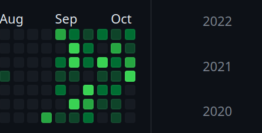

杂谈
最近这段时间，总有一种奇怪的想法，感觉自己做了很多事情，但其实又什么都没做，就像我github上面的活动一样，感觉自己好像写了很多东西，相比过去那个写了就不管了得我来说，这不是挺好的的吗，又仔细看看，自己每天push的东西，真的是一坨屎，看看别人写的东西吧，又好多看不懂，看看自己的写的什么垃圾博客吧，真的不知道写的是什么。但是我又很需要这种感觉自己很忙的感觉，这是为什么呢，可能是因为我现在还没有工作（其实是找不到工作），又不想每天无所事事，毕竟我就是很喜欢带着耳机，对着电脑，在自己世界里的感觉，也可以说我4月份找工作的经历，让我真的害怕找工作了，现在想跨出哪一步真的受不了，外面那些很早就出去工作的同龄人，工作经验和能力不比我丰富吗？还没毕业在校的，不必我更有激情吗？在外面工作了很多年的程序员，就更不用说了吗？还有github上面的一众大神……..
真的进了死循环吗，看着招聘上面的信息，上面需要掌握的技能，我就去学习，又在想，我不是什么聪明人，很多时候我真的不能完全掌握这知识。但是我又不想直接去面试，不想面试的时候感觉自己似懂非懂还要硬着头皮说自己了解，怎么说呢 , 想到这方面的，我又tm的焦虑了，真的受不了。
还是要改变点什么:
- 少抽烟，只是不能把他当成依赖吧
- 再专注一点
- 少点在网络上看那些没营养的了（至少不是在我学习的时候），在想不出写什么代码的时候，拿手机出来，看看无聊文章，看看没有营养的视屏，确实让我感觉有无意义的快乐，有一种逃避的快乐，手机点一下就能获得最直接的多巴胺。但是这根只没有思考能力的小白鼠又有何区别呢。我不想这样…….